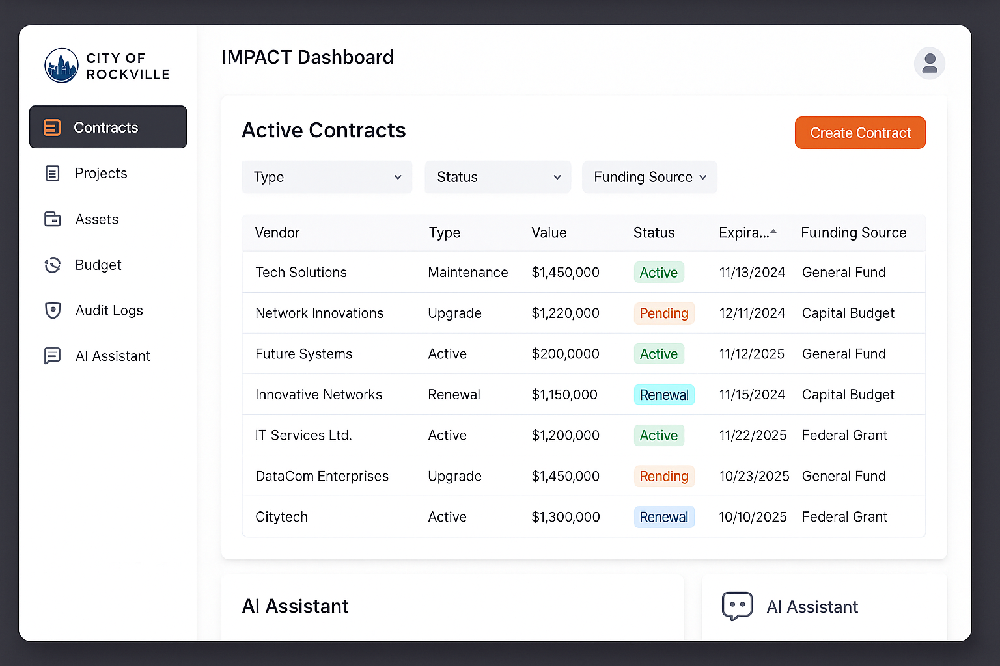

What is IMPACT?
The IMPACT Dashboard is a powerful tool for managing contracts, procurement, funding, strategic IT projects, and assets in a unified, role-based interface — built with public sector needs in mind.
Core Features
🧾 Contract Tracking
Track vendor agreements, terms, and expirations
Track vendor agreements, terms, and expirations
💰 Budget & Funding
Align contracts with budgets and funding sources
Align contracts with budgets and funding sources
📊 Project Planning
Track PIPs, enhancements, and project types
Track PIPs, enhancements, and project types
🧠 AI Assistant
Search contracts and insights with natural language
Search contracts and insights with natural language
🧱 Asset Management
Track hardware/software, ownership & leases
Track hardware/software, ownership & leases
🔔 Alerts & Audit
View expiration alerts and full change logs
View expiration alerts and full change logs
Dashboard Preview

Try the Live Demo
Launch DemoGet In Touch
Visit our GitHub Repository or contact us at impact@yourcity.gov.